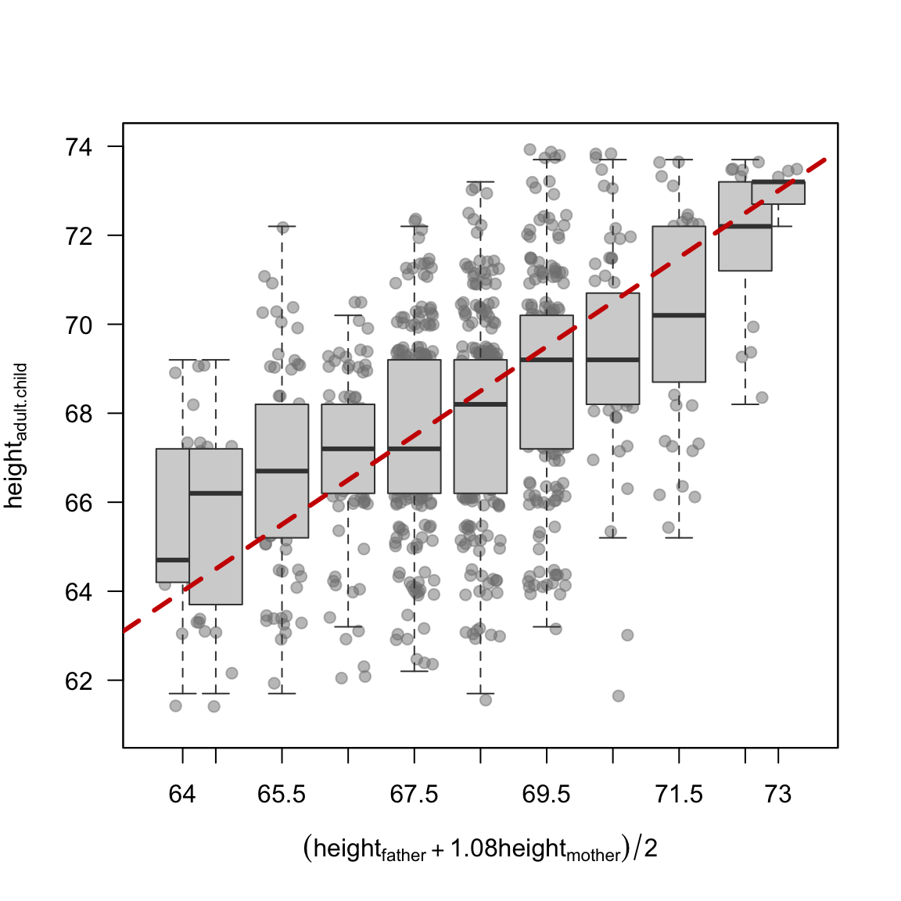
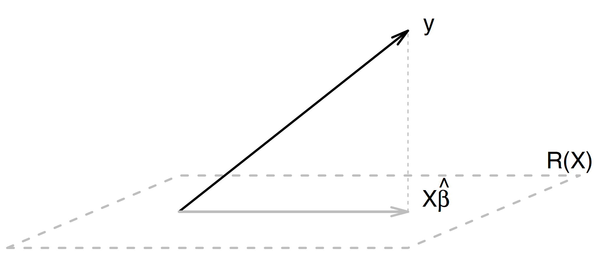
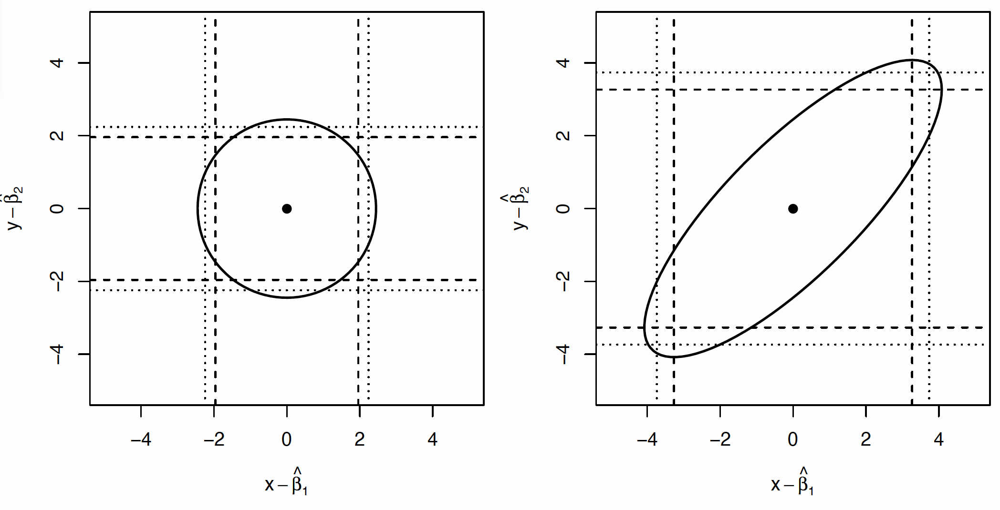
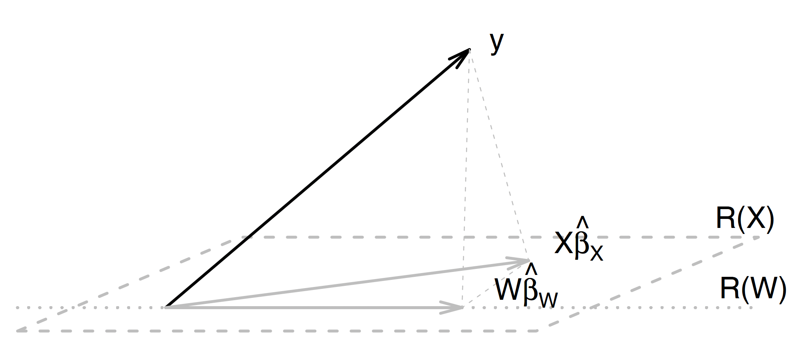
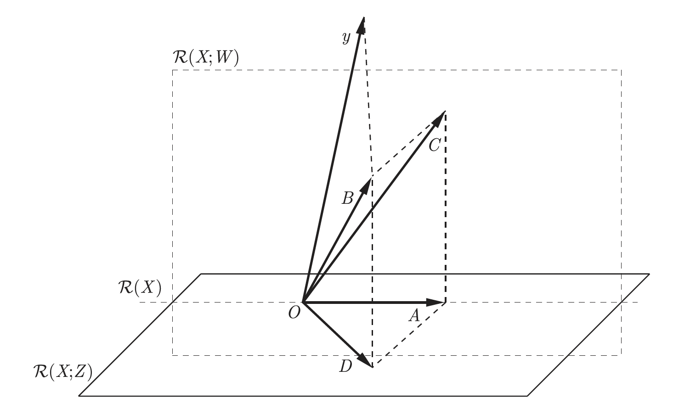
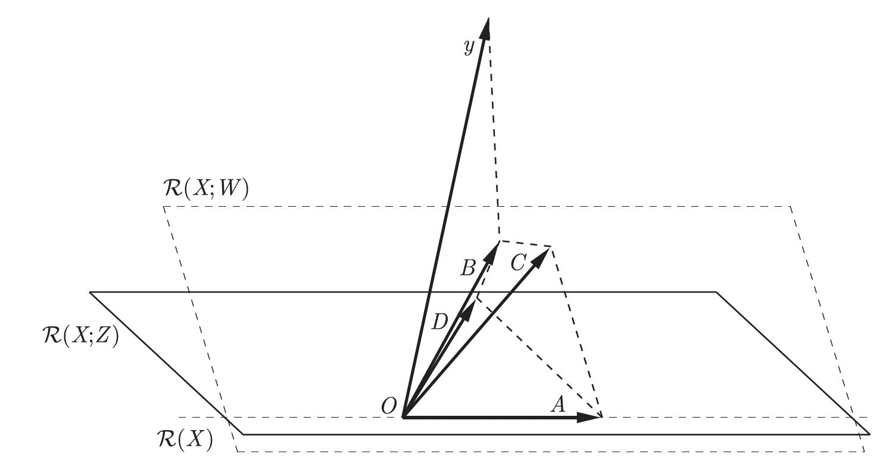

3 Theorems and Formulas
This chapter is written in an encyclopaedic style; here we compile mathematical facts concerning the formulation of models, the analysis of estimator distributions, and the construction of tests for linear models. Based on mathematical foundations introduced in this chapter, we will go forward to construct specific tests in the detailed scenarios and model formulations described. The encyclopedic format has many advantages (such as precision) but also has drawbacks; without context, it is difficult to understand the role played by each fact presented. Therefore, on a first reading, this chapter can be skipped. After reading the subsequent chapters, once you have gained an intuition, is it worth to return to this chapter to familiarise yourself with the precise mathematical properties of the tests and estimators used in linear models.
3.1 A Bit of History
Linear models are one of the oldest and most popular methods for modeling the relationship between a set of observed traits of some objects. Just to give some examples: Is there a relationship between the quantity and quality of milk produced (trait) by a cow (object)? What is the relationship between the size of a plant (trait) and the rate (trait) of plant (object) growth? Is there a relationship between eating habits (trait) and health (trait) in children (object), and if so, what is it?
In the case of linear models, we usually identify one trait that we wish to describe (will be called dependent variable or response), treating the other traits as something we will use to describe that particular one (will be called independent variable or predictor).
These names reflect a somewhat mechanistic intuition, whereby we can imagine that we have an influence on the predictors/explanatory variables and wish to investigate the extent of that influence on the response variable.
Linear models are extremely popular these days because they have many applications; naming just some of them, we may: (1) derive predictions, given an identified relationship, we can predict one trait from others: a cow’s milk yield from her genes (Henderson, 1975), sales volume from product attributes, and so on; (2) description of reality, by selecting the best model we commit to a particular description of the world and assess how well it is supported by the data; we can evaluate whether the relationship between height and weight is linear or quadratic, whether a drug dosage affects prognosis (Draper & Smith, 1998), and so forth; (3) an intermediate explanatory mechanism within larger models, in large systems processing vast amounts of data, linear models can serve as internal tools for interpreting or transforming data representations, as in sparse autoencoders used in the analysis of deep models (Bricken et al., 2023). Despite this diversity of applications, these models share a common roots.
The beginning of linear models can be traced back to the 18th and 19th centuries concerning the method of least squares, initially used in navigation and astronomy. There is no clear answer to the question of who first invented this method. Surprisingly, to this day, the issue of priority sparks debate among historians of mathematics. The first published work devoted to this method dates from 1805 and was written by French mathematician Adrien-Marie Legendre (Legendre, 1805). However, Johann Carl Friedrich Gauss claimed that he had been using this method since 1794-1795 (Gauss was 18 years old at the time!!!) for calculations needed for his work in astronomy. In 1809, Gauss described the method of least squares in his book, providing numerous examples of applications and proving the properties of this method when the random disturbance has a normal distribution (Gauss, 1809). Legendre never accepted Gauss’s claim of priority, and disputes over who invented the method of least squares continue to this day. There is still heated debate over who was actually the first and who invented what is perhaps the most important method of data analysis Stigler (1981).
Linear models are often referred to as regression models, while the term regression was first used by Sir Francis Galton in the 19th century. Francis Galton was a Renaissance man, involved in anthropology, statistics, and many other sciences. In 1886, he published a paper titled “Regression towards mediocrity in hereditary stature” (Galton, 1886), in which he presented the results of studies on the heritability of height. Galton noticed that sons of very tall fathers are, on average, taller than sons of shorter fathers, but their average height is lower than the average height of their fathers. Similarly, the height of sons of short fathers is closer to the population average. He called this phenomenon “regression toward the mean”. Galton proposed an equation describing the relationship between the heights of sons and fathers, or equivalently, describing the regression of height from generation to generation toward the average value (today we would call this equation a regression model). Using this equation, Galton determined the heritability coefficient for a trait such as height. Since this work, the name regression has been adopted for equations describing relationships between variables, and this name has become so widespread that today it is used even in situations that have nothing to do with the original meaning of the word regress.
The data set collected by Galton is available in R under the name galton in the UsingR package. In this data set, one column contains the average height of parents calculated as the average of the father’s height and 1.08 times the mother’s height (called midparent), and the other column contains the height of the adult child. Graphical summary of this data set is shown in Figure 3.1. The dashed line corresponds to the line with equation \(y=x\); as can be observed, in each parental height group, the average height of children is closer to the overall average. In the next chapter, we’ll take a look at this data under the guise of its more modern version MedScore story

Linear models are a special case of regression models in which the model structure takes a specific (linear) form. We will describe this structure in more detail below. These models have been extensively developed in the early 20th century by Karl Pearson and his contemporaries. Today, a century later, regression is one of the most popular statistical modeling tools. The relationship between variables postulated in the model can take various forms. Linear regression models can be relatively easily extended to generalized linear models (this family includes the very popular logistic regression) or to nonlinear models (e.g., GAM models, spline models, etc.). In this guide, we will focus only on linear models, but if you understand them correctly, it will be much easier for you to grasp other types of models as well. Readers wishing to explore the broader family of regression models beyond the linear case will find comprehensive treatments in Harrell (2015), which covers regression modelling strategy in depth including logistic regression, ordinal models, and survival analysis, and in Wood (2017), which provides a thorough introduction to generalised additive models and spline-based smoothing.
The rest of this chapter is structured in a following way. Section 3.2 presents the general form of the linear model; Section 3.3 presents the most popular methods for estimating coefficients in the linear model; Section 3.4 derives distributions for estimators; and Section 3.5 presents selected methods for testing hypotheses about coefficients in the linear model and constructing confidence intervals for these coefficients.
3.2 Models and Coefficients
Models describe relationships between some characteristics of reality. Since they typically take the form of a mathematical equation, then we must first reduce reality to a numerical, quantitative description. For example, if we wish to model the relationship between happiness and factors related to family, work, and health, we must translate these abstract concepts into numbers. The level of happiness can be measured by endorphin concentrations in the blood (impractical), by questionnaire (imprecise), by expert assessment (costly), or by other means. The more abstract the characteristic, the more expertise and domain knowledge is needed to construct a good quantitative description of it. An very interesting discussion of the challenges involved in such operationalisation is given by Harrell (2015) For the purposes of this guide, we will assume that a quantitative description is already in hand: for each object (we will use term observation), say, a person, every relevant characteristic can be expressed as a real number (we will call it a variable).
We further divide this quantitative description into two groups: variables we wish to predict/understand, called response (or dependent) variables, and variables we have measured and wish to use to explain them, called predictor (or independent) variables. This distinction matters because regression models are not generally symmetric, it is essential to specify which variable is a response and which are predictors. In the happiness example, a model describing happiness (response) as a function of health status (predictor) is an entirely different object from a model describing health status as a function of happiness, even though the same two variables appear in both, their roles have been exchanged. Now that we know how to describe reality, we need to collect data, i.e. these measurements for a certain number of observations (let’s say for \(n\) observations).
We will denote the response variable in this book by the symbol \(y\). The value of this variable for the \(i\)-th object will be denoted by \(y_i\). We will assume that this value is described by a single real number \(y_i \in \mathbb{R}\). We will denote the set of \(p\) predictor variables by the vector \(X = (X_1, ..., X_p)\), where \(X_j\), \(1\leq j\leq p\), will denote the \(j\)-th predictor variable. The value of \(X_j\) variable for the \(i\)-th object will be denoted by \(X_{i,j}\).
Assuming a linear relationship between variables \(X_j\) and variable \(y\), we express relations between them in the form
\[ y_i = X_{i,1} \beta_1 + X_{i,2} \beta_2 + ... + X_{i,p} \beta_p + \varepsilon_i, \tag{3.1}\]
where \(y_i\) and \(X_{i,j}\) were introduced above, \(\beta = (\beta_1, ..., \beta_p)\) is a vector of unknown model coefficients, and \(\varepsilon_i\) corresponds to the difference between the prediction of \(y\) and the observed value. This difference may be due to a measurement error, the influence of other, unmeasurable variables, or other inaccuracies. In this guide, we will make the additional (common) assumption that \(\varepsilon\) has distribution \(\mathcal{N}(0, \sigma^2 I_{n\times n})\).
Equivalently, we can therefore represent variable \(y_i\) as a random variable with distribution \(\mathcal{N}(X_i\beta, \sigma^2)\). Characteristic of this model is that the random component \(\varepsilon\) is additively related to the response variable.
Note: The adjective “linear” refers to the linear relationship between variable \(y\) and variables \(X\); this does not mean at all that we are limited to linear relationships between the response variable and predictor variables. For example, if we expect power-law relationships between two concentrations, we can consider in the model a linear relationship between the logarithms of these variables (e.g. \(\log X_j\), see Section 4.5 for an example); if we expect a nonlinear relationship of unknown character, we can encode variable of interest in a basis of polynomials or using spline functions, etc. In other words, the adjective linear concerns the vector \(\beta\) and means that in the model, coefficients appear to the first power; there are no terms such as \(\beta_1^2\) or \(\beta_1\beta_2\), etc.
Equation 3.1 describes a relationship between variables \(X_j\) and variable \(y\) for a single observation \(i\). It is convenient to express this relationship in vector form, where \(X\) is a vector describing the observations, consisting of \(p\) columns, and \(\beta\) is a column vector of unknown coefficients
\[ y = X \beta + \varepsilon. \tag{3.2}\]
Vector notation is convenient and compact. Given \(n\) observations, we can consider \(y = (y_1, ..., y_n)\) is a column vector with values of the response variable \(y\) for successive observations, \(X_{n\times p} = \{X_{i,j}\}\) is a matrix encoding explanatory variables, element \(X_{i,j}\) (in the \(i\)-th row and \(j\)-th column) determines the value of variable \(X_j\) for observation \(i\), \(\beta\) is a \(p\)-element vector of unknown coefficients, and \(\varepsilon = (\varepsilon_1, ..., \varepsilon_n) \sim \mathcal{N}(0, I_{n \times n} \sigma^2)\) is a column vector of \(n\) independent random variables with normal distribution and variance \(\sigma^2\).
By adopting a linear model to describe relationships between variables, we may be interested in the following tasks:
- Estimation of the (unknown) coefficients \(\beta\), both pointwise and interval estimation (construction of confidence intervals). We will use the hat notation for estimates, so estimates for model coefficients will be decoded as \(\hat{\beta}\).
- Estimation of parameter \(\sigma^2\), both pointwise and interval. Estimate will be decoded as \(\widehat{\sigma^2}\).
- Prediction of values of variable \(y\) given values of variables \(X\).
- Determination of distributions of estimators \(\hat{\beta}\) and \(\widehat{\sigma^2}\).
- Tests for verifying hypotheses about model coefficients, e.g. if they are different than zero.
- Selection of significant variables in the model, in short, selection of the optimal submodel.
We will discuss these issues in subsequent subsections.
3.3 Estimators for Model Coefficients
In model Equation 3.2, we said that coefficients \(\beta\) are unknown. Various estimation methods can be used to estimate them. In this chapter, we will present the most common: estimation with the ordinary least squares (OLS) method, with the maximum likelihood (ML) method and more recent ridge method introduced in Hoerl & Kennard (1970) and least absolute shrinkage and selection operator (LASSO) method introduced in Tibshirani (1996). The more variables there are in the model, the more popular the last two are; you can read more about them in Hastie et al. (2009).
3.3.1 Ordinary Least Squares (OLS) Method
In the case of least squares estimation, the estimators \(\hat{\beta}\) are found by minimizing the squared difference between values \(y\) and values \(\tilde{y} = X \tilde{\beta}\). The objective that is minimized is called the squared error or residual sum of squares, denoted by the abbreviation RSS (Residual Sum of Squares). The sought \(\hat{\beta}\) is the \(\tilde{\beta}\) minimizing the residual sum of squares.
To be more precise, for coefficients \(\tilde{\beta}\), the residual sum of squares is
\[ \begin{aligned} RSS(\tilde{\beta}) &= \sum_{i=1}^n (y_i - \tilde{y}_i)^2 \\ &= (y - \tilde{y})^T(y - \tilde{y}) \\ &= \sum_{i=1}^n (y_i-X_i\tilde{\beta})^2 \\ &= (y - X\tilde{\beta})^T(y - X\tilde{\beta}). \end{aligned} \tag{3.3}\]
Differentiating \(RSS(\tilde{\beta})\) with respect to \(\tilde{\beta}\) and setting the result to zero proceeds as follows.
Expand the quadratic form
\[ (y - X\tilde{\beta})^T(y - X\tilde{\beta}) = y^Ty - y^TX\tilde{\beta} - \tilde{\beta}^TX^Ty + \tilde{\beta}^TX^TX\tilde{\beta}, \]
and since \(y^TX\tilde{\beta}\) is a scalar it equals its own transpose \(\tilde{\beta}^TX^Ty\), so the two middle terms combine to \(-2\tilde{\beta}^TX^Ty\). So
\[ RSS(\tilde{\beta}) = (y - X\tilde{\beta})^T(y - X\tilde{\beta}) = y^Ty - 2\tilde{\beta}^TX^Ty + \tilde{\beta}^TX^TX\tilde{\beta}. \] Differentiate with respect to \(\tilde{\beta}\). Using the standard matrix calculus identities
\[ \frac{\partial}{\partial \tilde{\beta}}\,\tilde{\beta}^T a = a, \qquad \frac{\partial}{\partial \tilde{\beta}}\,\tilde{\beta}^T A \tilde{\beta} = 2A\tilde{\beta} \quad \text{(when $A$ is symmetric)}, \]
we differentiate each term of the expanded \(RSS\):
\[ \frac{\partial\, RSS(\tilde{\beta})}{\partial \tilde{\beta}} = \frac{\partial}{\partial \tilde{\beta}} \Bigl[ y^Ty - 2\tilde{\beta}^TX^Ty + \tilde{\beta}^TX^TX\tilde{\beta} \Bigr] = 0 - 2X^Ty + 2X^TX\tilde{\beta}. \]
Note taht: The first term \(y^Ty\) does not depend on \(\tilde{\beta}\) and vanishes. The second term gives \(-2X^Ty\) by the first identity with \(a = X^Ty\). The third term gives \(2X^TX\tilde{\beta}\) by the second identity, which applies because \(X^TX\) is symmetric by construction: \((X^TX)^T = X^TX\).
Set the derivative to zero
\[ \frac{\partial\, RSS(\tilde{\beta})}{\partial \tilde{\beta}} = -2X^Ty + 2X^TX\tilde{\beta} = 0. \]
Dividing through by 2 and rearranging gives the normal equations:
\[ X^TX\hat{\beta} = X^Ty \tag{3.4}\]
where \(\hat{\beta}\) is the value minimizing \(RSS(\tilde{\beta})\). For simplicity of notation, let’s adopt the notation \(RSS := RSS(\hat{\beta})\).
If we denote by matrix \(A\) the expression \(A = X^TX\) and by vector \(b=X^T y\), then solving Equation 3.4 reduces to solving the system of linear equations \(A x = b\) with respect to \(x\). In linear algebra, there are many algorithms for efficiently solving this system of equations.
To study the properties of estimator \(\hat{\beta}\) in a concise mathematical way, we will present Equation 3.4 in the form
\[ \hat{\beta} = (X^TX)^{-}X^T y, \tag{3.5}\]
where \((X^TX)^-\) denotes the inverse of matrix \(X^TX\) if this matrix is invertible, and the Moore-Penrose pseudoinverse if matrix \(X^TX\) is not invertible.
Equation 3.5 is convenient for analyzing properties of model coefficient estimators but is not used in statistical packages directly to compute values of these coefficients, because it requires performing three matrix multiplications and computing one inverse, which is computationally demanding and numerically unstable. In standard R functions, QR decomposition of matrix \(X\) is used. For large and narrow matrices \(X\), one can also use the solve() function to directly solve Equation 3.4.
Note: Equation 3.4 can be efficiently solved using QR decomposition of matrix \(X\). If we substitute \(X = QR\), we obtain
\[ R \hat{\beta} = Q^T y. \tag{3.6}\]
Since \(R\) is an upper triangular matrix, the above system of equations is easily solved by the substitution method.
Let’s introduce the following notation for the vector of fitted values \(\hat{y}\) and the vector of residuals \(\hat{\varepsilon}\):
\[ \hat{y} = X \hat{\beta} = X (X^TX)^{-}X^T y, \tag{3.7}\]
\[ \hat{\varepsilon} = y - \hat{y} = \left(I - X (X^TX)^{-}X^T\right) y. \tag{3.8}\]
Combining Equation 3.3 and Equation 3.5, we can express RSS as
\[ RSS = \hat{\varepsilon}^T \hat{\varepsilon} = y^T \left(I - X (X^TX)^{-}X^T\right) y. \]

The above formulas have an intuitive algebraic interpretation, presented in Figure 3.2. From algebra, we know that the orthogonal projection operator onto the subspace spanned by the columns of matrix \(X\) is defined by the formula \(P_X = X (X^TX)^{-}X^T\). Thus \(X \hat{\beta}\) is the orthogonal projection of vector \(y\) onto the space spanned by the columns of matrix \(X\), and \(\hat{\varepsilon} = y - X\hat{\beta}\) is the vector connecting \(y\) and the projection \(X\hat{\beta}\). Moreover, \(RSS\) is the square of the length of vector \(\hat{\varepsilon}\). Obviously, this distance is minimized by the projection operator (this is one of the properties of the projection operator), which is why minimizing \(RSS\) we obtained the solution as in Equation 3.7. Remembering this figure will greatly facilitate understanding the construction of confidence intervals or tests for model coefficients.
In literature devoted to linear models, the projection operator \(P_X\) is often denoted by the symbol \(H\), and the matrix describing this operator is called the hat matrix, so let’s add the notation1
1 The name “hat matrix” comes from the fact that \(\hat{y} = H y\), that is, using simple associations, matrix \(H\) “adds a hat” to \(y\).
\[ H = X (X^TX)^{-}X^T. \]
3.3.2 Properties of the OLS Estimator
A natural question is how good the least squares estimator is. It turns out to be the best in the class of unbiased estimators, as shown by the Gauss-Markov theorem. Note that the theorem concerns milder assumptions than those adopted in this guide, e.g. no need to assume gaussian distribution of \(\varepsilon\).
Gauss-Markov Theorem
In a model of the form
\[ y = X\beta + \varepsilon, \]
where \(\forall_i \text{E}[\varepsilon_i]=0\), \(\forall_i \text{Var}[\varepsilon_i] = \sigma^2\), and \(\forall_{i\neq j}\text{Cov}(\varepsilon_i,\varepsilon_j)=0\), that is, we assume assumptions about the random disturbance: that it has mean zero, constant variance, and individual random disturbances are independent, and matrix \(X\) is of full rank, the estimator of coefficients \(\beta\) given by Equation 3.5 is the estimator with the smallest variance in the class of linear unbiased estimators (so-called BLUE, best unbiased linear estimator) and is uniquely determined.
A proof of this theorem can be found, for example, in Chapter 2.8 of Faraway (2002).
An unbiased estimator of variance \(\sigma^2\) in model Equation 3.1 is
\[ \widehat{\sigma^2} = \frac{(Y - X\hat{\beta})^T (Y - X\hat{\beta})}{n-p} = RSS/(n-p). \tag{3.9}\]
Moreover, this is the estimator with the smallest variance in the class of unbiased quadratic estimators.
3.3.3 Maximum Likelihood Method
Let’s now see what estimators obtained by the maximum likelihood method look like. The likelihood function for model Equation 3.1 is expressed by the formula
\[ L(\beta, \sigma|y) = (2 \pi \sigma^2)^{-n/2} \exp\left(-\frac{1}{2} (y-X\beta)^T(y-X\beta)/\sigma^2\right), \]
and its logarithm
\[ \begin{aligned} l(\beta, \sigma|y) &= -\frac{n}{2} \log(2 \pi) -\frac{n}{2} \log(\sigma^2) -\frac{1}{2} (y-X\beta)^T(y-X\beta)/\sigma^2 \\ &= -\frac{n}{2} \log(2 \pi) -\frac{n}{2} \log(\sigma^2) -\frac{1}{2} RSS(\beta)/\sigma^2. \end{aligned} \tag{3.10}\]
From the form of the log-likelihood function, it follows that maximizing the likelihood function with respect to parameter \(\beta\) is equivalent to minimizing \(RSS(\beta)\). Thus the estimators for coefficients \(\beta\) obtained by the maximum likelihood method are identical to the estimators obtained by the method of minimizing the residual sum of squares!
Minimization with respect to parameter \(\sigma^2\)2 leads to the estimator
2 In most cases, we compute the derivative and set it equal to zero.
\[ \widehat{\sigma^2_{ML}} = RSS/n. \tag{3.11}\]
Note: Above, when searching for an estimator of parameter \(\sigma^2\), we maximized the likelihood function simultaneously with respect to \(\beta\) and \(\sigma^2\), and the estimator found by this method is called the maximum likelihood (ML) estimator.
If the number of coefficients \(\beta\) is large (so called large \(p\) problems), then to avoid simultaneous maximization of the likelihood function over a large parameter space, so-called residual/restricted maximum likelihood (REML) estimators are considered. In the first step, vector \(y\) is reduced to the subspace orthogonal to the columns of matrix \(X\), and then estimates of parameter \(\sigma\) are sought on the reduced subspace. In this way, the influence of nuisance parameters \(\beta\) is removed from the estimation of parameter \(\sigma^2\).
The estimator obtained in this way for the considered linear model is expressed by the formula
\[ \widehat{\sigma^2_{REML}} = RSS/(n-p). \]
It is therefore equal to estimator Equation 3.9, and thus is an unbiased estimator of \(\sigma^2\), unlike estimator Equation 3.11, which is biased (although explaining this is quite technical and goes beyond the scope of this guide).
In the considered linear model, estimation of coefficients \(\beta\) is simple, so this derivation of the REML estimator is rarely encountered. It is, however, often used in mixed models and other more complex models. Here we mention it only for completeness.
For the purposes of constructing statistical tests, let’s determine the value of the log-likelihood function at the point maximizing this function; it is
\[ l(\hat{\beta}, \widehat{\sigma^2_{ML}}|y) = -\frac{n}{2} \log(2 \pi) - \frac{n}{2} \log(RSS/n) - \frac{n}{2}, \]
and the likelihood function itself is, up to a constant, equal to
\[ L(\hat{\beta}, \widehat{\sigma^2_{ML}}|y) \propto (RSS/n)^{-n/2}. \tag{3.12}\]
We will use this last formula repeatedly.
3.3.4 Regularized Estimation of Coefficients in Linear Models
The estimator of coefficients \(\beta\) presented in Equation 3.5 is an unbiased estimator with minimum variance in the class of unbiased estimators (BLUE, best linear unbiased estimator). However, there are situations where biased estimators have smaller variance and even smaller mean squared error than unbiased estimators.3
3 We don’t need to look far, this is the case, for example, for the variance estimator in linear models, where the ML estimator is biased but has smaller mean squared error than the unbiased estimator.
The key to understanding why biased estimators can be useful lies in a concept known as the bias-variance trade-off. The mean squared error of estimator \(\hat{\beta}\) can be decomposed into squared bias, variance and the irreducible error \(\delta\) (see Hastie et al. (2009) for more details):
\[ MSE(\hat{\beta}) = \text{var}(\hat{\beta}) + \text{bias}^2(\hat{\beta}) + \delta, \tag{3.13}\]
we often speak of the balance between bias and variance of the estimator when minimizing mean squared error. Variance reduction can be achieved by shrinking parameter estimates toward zero, imposing a penalty for large values of coefficients. This leads to biased estimators but (possibly) with smaller variance and (sometimes) lower MSE.
In other words, for linear models, we can introduce bias in the form of a penalty for the magnitude of coefficients in the model, which results in variance reduction of model coefficient estimates and thus can lead to a decrease in mean squared error of these estimates and, in some situations, a decrease in prediction error of the linear model.
This leads to a new criterion which can be minimised in order to deliberately introduce a bias. Instead of RSS, by adding a penalty for the magnitude of parameter estimates to the sum of squares, we obtain a new criterion called the Penalized Residual Sum of Squares (PRSS)
\[ PRSS(\beta) = (y - X\tilde{\beta})^T (y - X\tilde{\beta}) + f(\beta), \]
where \(f(\beta)\) is the penalty for coefficient values. The estimator of parameters \(\beta\) with respect to PRSS is
\[ \hat{\beta}_{f(\beta)} = \min_\beta PRSS(\beta). \]
Various penalty functions are considered in the literature. In next sections we describe three that currently form the canon.
3.3.5 Ridge Regression
Ridge regression, also called Tikhonov regularization, is one of the oldest model regularization methods (see Hoerl & Kennard (1970)).
The penalty function \(f(\beta)\) is a scaled sum of squared coefficients, that is, the \(L_2\) norm of the coefficient vector. More precisely:
\[ f(\beta) = \lambda||\beta||^2_{L_2} = \lambda\beta^T \beta, \tag{3.14}\]
and
\[ PRSS(\beta) = (y - X\tilde{\beta})^T (y - X\tilde{\beta}) + \lambda\beta^T \beta, \tag{3.15}\]
where \(\lambda\) is the regularization factor.
If \(\lambda=0\), the problem reduces to the problem without penalty, that is, the least squares method. The larger \(\lambda\), the greater the penalty for coefficient magnitude, and the greater the shrinkage of coefficients \(\hat{\beta}_{f(\beta)}\) toward \(0\).
For such a defined penalty, we can analytically determine the formula for parameter estimators. Computing the derivative with respect to the parameter from Equation 3.15 and setting it equal to zero leads to the formula
\[ \hat{\beta}^{\text{ridge}}_{\lambda} = (X^TX + \lambda I)^{-1}X^T y. \tag{3.16}\]
We can use ridge regression even when columns of matrix \(X\) are collinear and \(X^TX\) is not invertible.
3.3.6 LASSO Regression (Least Absolute Shrinkage and Selection Operator)
The LASSO method was proposed by Tibshirani (1996) as a method for both estimating coefficients in the model and selecting the model, hence the term “selection operator” in the title.
The penalty function \(f(\beta)\) is determined as a scaled sum of absolute values of coefficients, that is, the \(L_1\) norm of the coefficient vector. More precisely:
\[ f(\beta) = \lambda||\beta||_{L_1} = \lambda \sum_{i=1}^p |\beta_i|, \tag{3.17}\]
and
\[ PRSS(\beta) = (y - X\tilde{\beta})^T (y - X\tilde{\beta}) + \lambda ||\beta||_{L_1}. \tag{3.18}\]
The solution is not given in closed algebraic form as it was in ridge regression. To find estimates of \(\beta\) for a given \(\lambda\), quadratic programming techniques are used. An alternative is to use a modification of the LARS algorithm (Least-Angle Regression (Efron et al., 2004)) to efficiently determine the LASSO solution for all lambdas.
The result of the LASSO method is sparse solutions, meaning some coefficients are shrunk to zero, which is why this method is used as a model selection method. We will have a closer look to it in Section 9.3.5.
3.3.7 Elastic Net
Elastic net is a method proposed by Zou & Hastie (2005) and combines penalty terms from ridge regression and the LASSO method.
The penalty function \(f(\beta)\) is determined as a combination of both norms:
\[ f(\beta) = \lambda_1||\beta||_{L_1} + \lambda_2||\beta||_{L_2}. \tag{3.19}\]
There are many more methods for determining coefficients in models. We mentioned the above because ridge regression shrinks effect estimates in a similar way to Henderson’s equations for mixed models, and the LASSO method is often used as a model selection method.
Note that the difference between ridge regression and LASSO appears to be only symbolic, the norm in which we calculate vector length changes from \(L_2\) to \(L_1\). However, the consequences of this change are significant. The LASSO method produces models where coefficients can be estimated as equal to zero, resulting in a sparse model. Ridge regression shrinks toward zero but doesn’t zero out coefficients (shrinkage). Both methods produce biased estimates of true values in the model, but by introducing bias we hope for variance reduction and thus improved prediction quality.
3.4 Distributions of Estimators
So far, we have focused on estimating the model’s coefficients. However, the data we are observing are subject to error and uncertainty, so the estimation of the coefficients is also subject to error and uncertainty. To draw conclusions about the coefficients, we need to know how large this uncertainty is, and this is revealed by information about the distribution of the coefficient estimates.
3.4.1 Distributions of OLS Estimators
Let’s start with the distribution of estimator \(\hat{\beta}\). Substituting \(y \sim \mathcal{N}(X\beta, \sigma^2)\) into formula Equation 3.5, we obtain
\[ \hat{\beta} \sim \mathcal{N}\left(\beta, (X^TX)^{-}\sigma^2\right). \tag{3.20}\]
Using properties of the multivariate normal distribution, we can determine the marginal distribution of the \(i\)-th element of vector \(\hat{\beta}\):
\[ \hat{\beta}_i \sim \mathcal{N}(\beta_i, (X^TX)^{-}_{ii} \sigma^2), \tag{3.21}\]
where \((X^TX)^{-}_{ii}\) is the \(i\)-th element on the diagonal of matrix \((X^TX)^{-}\). If variables \(X\) are close to collinearity, then values on the diagonal of \((X^TX)^{-}\) can be very large, and thus the variance of estimators \(\beta_i\) will be large.4
4 In cases where matrix \(X^TX\) is close to singular, various methods of regularization are used, for example ridge regression is used, reducing the variance of the estimate of \(\beta\) at the cost of bias. More information on this topic is in Section 9.2.1.
What about the variance estimator \(\widehat{\sigma^2}\). The natural candidate to start with is to base the estimate on the residuals \(\hat{\varepsilon} = y - X\hat{\beta}\), since they are the observable counterpart of the unobservable errors. Summing their squares gives the residual sum of squares \(RSS = \hat{\varepsilon}^T\hat{\varepsilon}\), which measures the total variation in \(y\) left unexplained by the fitted model. It can be shown that, under the standard assumption \(\varepsilon \sim \mathcal{N}(0, \sigma^2 I_{n \times n})\), the scaled quantity
\[ \frac{RSS}{\sigma^2} = \frac{(n-p)\,\widehat{\sigma^2}}{\sigma^2} \sim \chi^2_{n-p} \tag{3.22}\]
follows a chi-squared distribution with \(n - p\) degrees of freedom, where \(n\) is the number of observations and \(p\) is the number of estimated coefficients (including the intercept). Taking the expectation of both sides shows that \(\widehat{\sigma^2} = RSS / (n - p)\) is an unbiased estimator of \(\sigma^2\).
To examine the significance of coefficients \(\beta\), normalized estimates of model coefficients are often used. Using Equation 3.20, we can standardize \(\hat{\beta}\):
\[ (\hat{\beta} - \beta)(X^TX)^{1/2}/\sigma \sim \mathcal{N}(0, I_p). \]
From this it’s easy to see that
\[ \frac{(\hat{\beta} - \beta)^T X^T X (\hat{\beta} - \beta)}{\sigma^2} \sim \chi^2_p. \tag{3.23}\]
Since statistics \(\hat{\beta}\) and \(\widehat{\sigma^2}\) are independent,5 the ratio of rescaled statistics from Equation 3.22 and Equation 3.23 has a distribution independent of the value of parameter \(\sigma^2\), that is,
5 Why are they independent? This is clearly visible in Figure 3.2 both are determined on orthogonal spaces, and since \(\varepsilon\) is a vector of independent random variables, its orthogonal linear combinations are also independent.
\[ \frac{\frac{(\hat{\beta} - \beta)^T X^T X (\hat{\beta} - \beta)}{\sigma^2}/p}{\frac{(n-p) \widehat{\sigma^2}}{\sigma^2}/(n-p)} = \frac{(\hat{\beta} - \beta)^T X^T X (\hat{\beta} - \beta)}{p \widehat{\sigma^2}} \sim F_{p,n-p}. \tag{3.24}\]
Thus we have a distribution for estimator \(\hat{\beta}\) when we don’t know \(\sigma^2\). This is an important result. We will use this distribution to test the significance of the set of coefficients using the F-test.
We can also use this last equation to determine the marginal distribution for \(\hat{\beta}_i\). Repeating the above reasoning, we obtain6
6 Distribution \(F_{1,k}\) is the square of t-Student distribution \(t_k\)!
\[ (\hat{\beta}_i - \beta_i) \sqrt{(X^TX)_{ii} / \widehat{\sigma^2}} \sim t_{n-p}. \tag{3.25}\]
3.4.2 Asymptotic Distribution of Maximum Likelihood Estimators
Maximum likelihood estimators have a number of desirable properties. For example, in a regular model7, the asymptotic distribution of estimator \(\hat{\theta}_{ML}\) is \(A\mathcal{N}(\theta, I^{-1}(\theta))\), where \(I(\theta)\) is Fisher information about parameter \(\theta\).
7 We won’t go into definitions of what a regular model is here; the important thing is that the models we’ll be considering are regular
Using the form of the likelihood function Equation 3.10, we can easily calculate Fisher information \(I(\theta) = E\left[\left(\frac{\delta}{\delta \theta} \ln f(x; \theta)\right)^2\right]\). In this way, we obtain asymptotic distributions for estimators obtained by the maximum likelihood method:
\[ \hat{\beta}_{ML} \xrightarrow{n \to \infty} A\mathcal{N}\left(\beta, \sigma^2 (X^TX)^-\right) \tag{3.26}\]
and
\[ \widehat{\sigma^2}_{ML} \xrightarrow{n \to \infty} A\mathcal{N}\left(\sigma^2, 2\sigma^4/n\right). \tag{3.27}\]
3.5 Confidence Intervals and Tests
Let’s start with confidence intervals for coefficients \(\beta\). We can construct confidence intervals for a single coefficient or simultaneously for a set of several coefficients. For practical reasons, rectangular confidence intervals (that is, constructed independently for each coordinate, for each coefficient) are most often built, that is, independently for each \(\beta_i\), so we’ll start by presenting a confidence interval for a single \(\beta_i\).
3.5.1 Confidence Interval for \(\beta_i\)
Using the marginal distribution of \(\hat{\beta}_i\) (see Equation 3.25), we can determine a confidence interval at level \(1-\alpha\). The shortest, in this case symmetric, confidence interval will be of the form
\[ CI_{1-\alpha} = [\hat{\beta} - c_\alpha, \hat{\beta} + c_\alpha], \]
where \(c_\alpha = t^{\alpha/2}_{n-p} \sqrt{\widehat{\sigma^2_{OLS}} (X^TX)^{-}_{ii}}\) and \(t^{\alpha/2}_{n-p}\) is the \(\alpha/2\) quantile of the t-Student distribution with \(n-p\) degrees of freedom. The t-Student distribution is symmetric and converges to the normal distribution as the number of degrees of freedom increases, so, for large values of n, the normal distribution approximation can be used.
We could also determine a confidence interval based on the asymptotic distribution Equation 3.26, but for small \(n\) we would obtain an inaccurate confidence interval, and for large \(n\) an interval close to the one determined above.
3.5.2 Test for a Marginal Hypothesis About \(\beta_i\)
Similarly to constructing a confidence interval, we can use distribution Equation 3.25 to construct a test for the null hypothesis
\[ H_0: \beta_i = 0. \tag{3.28}\]
Below we will present a test for a two-sided alternative hypothesis in the full model, that is, in the presence of all other variables \(X\). This is a so-called Type III test.
As the test statistic let’s choose \(T = \hat{\beta}_i \sqrt{(X^TX)_{ii} / \widehat{\sigma^2}}\). Since for a true null hypothesis it has a central t-Student distribution, the critical values will be appropriate quantiles of this distribution, chosen to control Type I error at level \(\alpha\).
The test result is most often presented by giving p-values. For null hypothesis Equation 3.28 and a two-sided alternative, we can immediately write the formula for the p-value:
\[ p_{\beta_i} = 2(1 - F_{t_{n-p}}(|\hat{\beta}_i| \sqrt{(X^TX)_{ii}/\widehat{\sigma^2}})), \]
where \(F_{t_{n-p}}(x)\) is the value of the cumulative distribution function of the t-Student distribution with \(n-p\) degrees of freedom at point \(x\).
It’s equally easy to write the formula for the p-value for a one-sided alternative hypothesis. For example, for alternative \(\beta_i > 0\), we determine the p-value as
\[ p_{\beta_i} = 1 - F_{t_{n-p}}(\hat{\beta}_i \sqrt{(X^TX)_{ii}/\widehat{\sigma^2}}). \]
If \(p_{\beta_i}<\alpha\), then at significance level \(\alpha\) we have grounds to reject the null hypothesis. Obviously, both the significance level \(\alpha\) and the form of the alternative (whether one-sided or two-sided) should be determined before beginning testing.
3.5.3 Confidence Intervals for a Set of Coefficients of Vector \(\beta\)
Joint confidence intervals for a set of coefficients of vector \(\beta\) can be determined using knowledge of distribution Equation 3.24. The sought confidence interval will be the interior of an ellipsoid whose boundary is the set of points \(\{z\}\) defined by the equation
\[ (\hat{\beta} - z)^T X^T X (\hat{\beta} - z) = p \widehat{\sigma^2} q_{F_{p,n-p}(1-\alpha)}, \]
where \(q_{F_{p,n-p}}(1-\alpha)\) is the \(1-\alpha\) quantile of the \(F\) distribution with \(p\) and \(n-p\) degrees of freedom. The justification follows directly from the form of the pivotal function for \(\beta\) and looks similar whether we’re interested in a confidence interval for the entire vector \(\beta\) or for a subset of elements of this vector. More about simultaneous intervals can be found in Faraway (2002).
In Figure 3.3, we show an example of simultaneous and marginal confidence intervals for \(\beta=(\beta_1, \beta_2)\) in the case when columns of matrix \(X\) are orthogonal (on the left) and close to collinearity (on the right). In this example, the simultaneous interval has a smaller area than the product of marginal intervals. Moreover, the simultaneous interval controls at level \(1-\alpha\) the probability that both unknown values \(\beta\) are in it, while marginal intervals control this probability for each coordinate separately. The disadvantage of simultaneous intervals is the difficulty in presenting them, especially for a larger number of dimensions.

3.5.4 Test for a Hypothesis About a Subset of Coefficients \(\beta\)
Let’s construct a test for a set of coefficients. For simplicity, assume we’re testing the last \(q \leq p\) coefficients. The null hypothesis is therefore
\[ H_0: \beta_{p-q+1} = ... = \beta_p = 0. \tag{3.29}\]
The alternative hypothesis is the statement that at least one \(\beta_i \neq 0\) for \(i>p-q\).
Let’s introduce additional notation. Let \(W\) be a matrix equal to the first \(p-q\) columns of matrix \(X\). Obviously, the subspace spanned by columns of matrix \(W\) is contained in the subspace spanned by columns of matrix \(X\) (so \(\mathcal{R}(W) \subseteq \mathcal{R}(X)\)). By \(\hat{\beta}_X\) we denote the value of the estimator determined for matrix \(X\), and by \(\hat{\beta}_W\) the value of the estimator determined for matrix \(W\).
Let’s construct a test by the likelihood ratio method. Using Equation 3.12, we have
\[ \frac{L(\hat{\beta}_W, \hat{\sigma}_W|y)}{L(\hat{\beta}_X, \hat{\sigma}_X|y)} = \left(\frac{RSS_{W}}{RSS_{X}}\right)^{-n/2}. \]
The likelihood ratio test can be based on the statistic
\[ T_1 = \frac{RSS_{W}}{RSS_{X}}, \]
whose large values speak against the null hypothesis. Equivalently, we can consider statistic \(T_2=T_1-1\), which will be easier for us to study:
\[ T_2 = \frac{RSS_{W} - RSS_{X}}{RSS_{X}}. \tag{3.30}\]
The question is what distribution does it have? We can derive this distribution formally, but it’s better to read it from Figure 3.4. \(RSS_{W}\) is the square of the length of vector \(y - W\hat{\beta}_W\), \(RSS_{X}\) is the square of the length of vector \(y - X\hat{\beta}_X\). So, by the Pythagorean theorem (see where the orthogonal projections are), \(RSS_{W} - RSS_{X}\) is the square of the length of vector \(W\hat{\beta}_W - X\hat{\beta}_X\). Under the true null hypothesis, the distribution of the square of the length of this vector is a \(\chi^2_{p-q}\) distribution scaled by variance \(\sigma^2\). The distribution of \(RSS_X\), that is, the square of the length of vector \(y - X\hat{\beta}_X\), is a \(\chi^2_{p}\) distribution scaled by variance \(\sigma^2\). Both vectors are random variables on orthogonal spaces; vector \(\varepsilon\) is a vector of independent variables, so the lengths \(RSS_X\) and \(RSS_{W} - RSS_{X}\) are independent variables.8
8 Why? Compare with formula Equation 3.22.
Summarizing,
\[ \frac{RSS_W - RSS_X}{\sigma^2} \sim \chi^2_{p-q}, \]
\[ \frac{RSS_X}{\sigma^2} \sim \chi^2_{n-p}. \]
The ratio of these two variables has distribution
\[ \frac{(RSS_W - RSS_X)/(p-q)}{RSS_X/(n-p)} \sim F_{p-q, n-p}. \]
We can now write the formula for the p-value for the test verifying hypothesis Equation 3.29:
\[ p = 1 - F_{p-q, n-p}\left( \frac{(RSS_W - RSS_X)/(p-q)}{RSS_X/(n-p)} \right), \]
where \(F_{p-q, n-p}(.)\) denotes the cumulative distribution function of the F distribution with \(p-q, n-p\) degrees of freedom.
Let’s add that test statistic Equation 3.30 has an intuitive interpretation presented in Figure Figure 3.4. The denominator, that is \(RSS_X = ||y - X \hat{\beta}_X||^2\), is the length of the vector corresponding to random disturbance from the \(n-p\) dimensional space, while \(RSS_W - RSS_X = ||W\hat{\beta}_W - X\hat{\beta}_X||^2\) is the length of the vector corresponding to the effect of variables \(X \backslash W\). To reject the hypothesis of insignificance of these variables, the length \(RSS_W - RSS_X\) should be large compared to \(RSS_X\).

3.5.5 Confidence Interval for \(\sigma^2\)
Confidence intervals for \(\sigma^2\) can be determined in two ways. If \(\sigma^2\) is estimated by the maximum likelihood method, we can use the asymptotic distribution of the maximum likelihood estimator (see Equation 3.27):
\[ \widehat{\sigma^2_{ML}} / \sigma^2 \sim A\mathcal{N}(1, 2/n) \]
In this case, the asymptotic confidence interval at level \(1-\alpha\) is
\[ CI_{1-\alpha} = \left[\widehat{\sigma^2}_{ML}\left(1 + q^{1-\alpha/2} \sqrt{2/n}\right)^{-1}, \widehat{\sigma^2_{ML}}\left(1 + q^{\alpha/2} \sqrt{2/n}\right)^{-1} \right]. \]
If we use OLS or REML estimators, we can determine confidence intervals directly from Equation 3.22, which indicates a pivotal function for parameter \(\sigma^2\).9
9 A pivotal function is a function of the sample and parameter whose distribution doesn’t depend on the parameter; it’s used to determine confidence intervals.
In this case, the exact confidence interval (the one presented above was asymptotic) has the form
\[ CI_{1-\alpha} = \left[\widehat{\sigma^2_{OLS}} \frac{n-p}{\chi^2_{1-\alpha_1,n-p}}, \widehat{\sigma^2_{OLS}} \frac{n-p}{\chi^2_{\alpha_2,n-p}}\right], \]
where \(\alpha_1 + \alpha_2 = \alpha\), and \(\chi^2_{1-\alpha_1,n-p}\) denotes the \(1-\alpha_1\) quantile of the \(\chi^2\) distribution with \(n-p\) degrees of freedom. Since the \(\chi^2\) distribution is not symmetric, to find the shortest confidence interval, one should choose \(\alpha_1\) and \(\alpha_2\) so that the densities of the \(\chi^2_{n-p}\) distribution at points \(\alpha_1\) and \(\alpha_2\) are equal and simultaneously \(\alpha_1 + \alpha_2 = \alpha\). For large \(n-p\), the distribution becomes increasingly symmetric, so one can choose \(\alpha_1 = \alpha_2 = \alpha/2\).
3.5.6 Confidence Interval for \(y_i\)
If we want to use the linear model to determine an estimate \(\hat{y}\) for new observations \(x_0\), we will often also be interested in confidence intervals for these predictions.
If the linear model is adequate, then for a new observation, let’s denote it \(x_0\), the response variable is described by the equation \(y_0 = x_0 \beta + \varepsilon_0\), where \(\varepsilon_0 \sim \mathcal{N}(0,\sigma^2)\).
We determine the point prediction for \(y_0\) as \(\hat{y}_0 = x_0 \hat{\beta}\). When determining the confidence interval for \(y_0\), we must take into account that in the estimate \(\hat{y}_0\), uncertainty concerns two estimated parameters: vector \(\beta\) and value \(\sigma^2\).
We can easily handle the uncertainty regarding estimate \(\hat{\beta}\). Using the formula for the distribution of \(\hat{\beta}\), we have that \(x_0 \hat{\beta} / \sqrt{\widehat{\sigma^2} x_0^T (X^TX)^{-1} x_0}\) has a noncentral t-Student distribution. Variables \(x_0 \hat{\beta}\) and \(\varepsilon_0\) are dependent, and their sum is a scaled t-Student distribution (if they were independent, it would be the sum of two t-Student distributions) scaled by \(\sqrt{\widehat{\sigma^2} (1+x_0^T (X^TX)^{-1} x_0)}\).
So the confidence interval for \(y_i\) is
\[ CI_{1-\alpha} = [x_0 \hat{\beta} - c_\alpha, x_0 \hat{\beta} + c_\alpha], \]
where \(c_\alpha = t_{n-p}^{\alpha/2}\sqrt{\widehat{\sigma^2} (1 + x_0^T (X^TX)^{-1} x_0)}\).
3.5.7 Orthogonality of the Model Matrix
We consider a linear model with structure
\[ y = [X \; W \; Z] \begin{bmatrix}\beta_X\\ \beta_W\\ \beta_Z\end{bmatrix} + \varepsilon, \]
where \(X\), \(W\), and \(Z\) are matrices with \(p_1\), \(p_2\), and \(p_3\) columns respectively. If we want to verify hypotheses about coefficients \(\beta_W\), \(\beta_Z\), we can consider the following null hypotheses:
\[ \begin{aligned} H_0^{I}:& \beta_W = 0,\\ H_0^{II}:& \beta_Z = 0,\\ H_0^{III}:& \beta_Z = \beta_W = 0. \end{aligned} \]
Let’s focus our attention on hypothesis \(H_0^{I}\). To verify it, we can use the F-test described in Section 3.5.2:
- Either in model \(y = [X \; W] \begin{bmatrix}\beta_X\\ \beta_W\end{bmatrix}\) against \(y = X \beta_X\),
- Or in model \(y = [X \; W \; Z] \begin{bmatrix}\beta_X\\ \beta_W\\ \beta_Z\end{bmatrix}\) against \(y = [X \; Z] \begin{bmatrix}\beta_X\\ \beta_Z\end{bmatrix}\).
In the first case, the test statistic will be (using notation from Figure 3.5)
\[ T_2' = \frac{|CA|^2}{|yC|^2} = \frac{|[X \; W]\widehat{\beta_{X W}} - X\hat{\beta}_{X}|^2}{|y - [X \; W]\widehat{\beta_{X W}}|^2}, \]
in the second case, the test statistic will be
\[ T_2'' = \frac{|BD|^2}{|yB|^2} = \frac{|[X \; W \; Z]\widehat{\beta_{X W Z}} - [X \; Z]\widehat{\beta_{X Z}}|^2}{|y - [X \; W \; Z]\widehat{\beta_{X W Z}}|^2}. \]
Note that if columns of matrices \(X\), \(W\), and \(Z\) are orthogonal to each other, then \(|BD|=|CA|\), \(|AB|^2 = |BC|^2+|CA|^2\), \(|yA|^2 = |yB|^2+|AB|^2\), and \(|yA|^2 = |yB|^2+|BC|^2+|CA|^2\), and statistic \(T_2''=\frac{|CA|^2}{|yC|+|CB|^2}\) is equivalent to \(T_2'\) because \(|CB|\) and \(|CA|\) are independent. This means that the test result using statistics \(T_2'\) and \(T_2''\) will be identical, regardless of whether \(Z\) is in the model.
However, if columns \(W\) and \(Z\) are not orthogonal, then the situation looks like in Figure 3.6. Lengths \(|BD|\) and \(|CA|\) can be different, and thus we can obtain different test results using test \(T_2'\) versus using \(T_2''\).
For hypothesis \(H_0^{III}\), the test statistic has the form
\[ T_2''' = \frac{|BA|^2}{|yB|^2}. \]
For orthogonal \(W\) and \(Z\), we have \(|BA|^2 = |BC|^2+|BD|^2 = |CA|^2+|DA|^2\), so if the effect of either variable is significant, regardless of whether in the presence of the other variable or not, we will reject hypothesis \(H_0^{III}\).
However, if \(W\) and \(Z\) are dependent, for example as in Figure 3.6, then based on test results for columns separately \(W\) or \(Z\), we cannot draw conclusions about hypothesis \(H_0^{III}\).
The above example illustrates how many benefits are obtained if \(Z\) and \(W\) are orthogonal. If we have control over explanatory variables, it’s worth ensuring orthogonality of columns of the model matrix. This orthogonality can be achieved in several ways, including:
- If submatrices \(Z\) and \(W\) correspond to dummy variables encoding categorical features, then by choosing appropriate encoding, that is, so-called contrasts, we can obtain orthogonal columns (see Section 5.5).
- If we can control dependent variables, we can apply a so-called experimental design, that is, select (not randomly!) from the population observations with such values of dependent variables that columns \(W\) and \(Z\) will be orthogonal. In particular, a balanced design, that is, one in which each group of factors is represented by an equal number of observations (so-called balanced design), allows encoding matrices \(W\) and \(Z\) in an orthogonal way.


3.5.8 Armed? Let’s see how it works in practice
The theory developed in this chapter, distributions of estimators, hypothesis tests, confidence and prediction intervals, forms the backbone of everything that follows. The next chapters put these tools to work on datasets from the WaszKrak world, and many of the abstract results introduced here will become considerably more intuitive once they are attached to a concrete question and a scatter plot. If some of the derivations still feel opaque, that is entirely expected: statistical theory tends to clarify in retrospect, not in advance. Return to this chapter after working through a few examples and you will likely find that the pieces fall into place on their own.